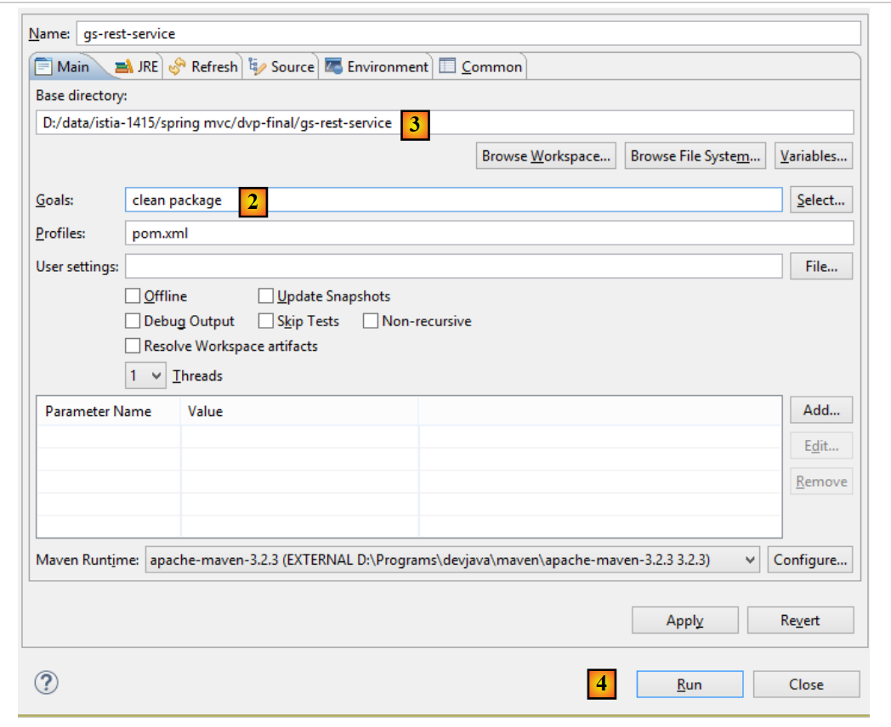
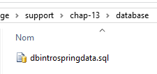
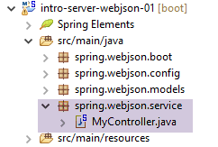
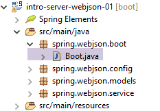
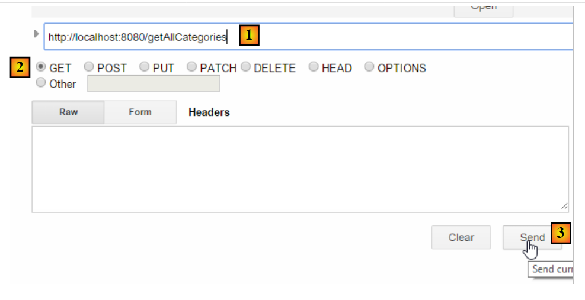
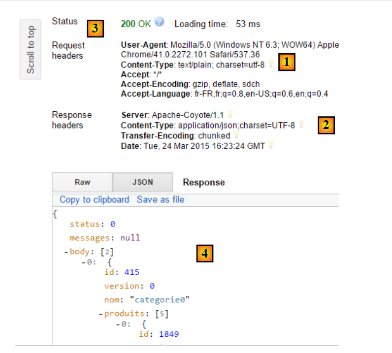
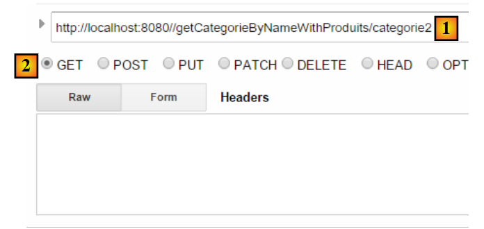
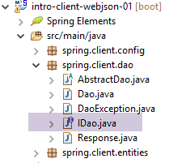
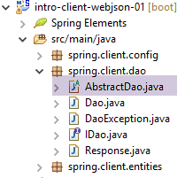

13. [Cours]: Exponer una base de datos en la web con Spring MVC
Palabras clave: arquitectura multicapa, Spring, inyección de dependencias, servicio web / jSON, cliente / servidor
13.1. Support
 |  |
Los proyectos de este capítulo se encuentran en la carpeta [support / chap-13]. El script SQL [dbintrospringdata.sql] permite crear la base MySQL necesaria para las pruebas.
13.2. El papel de Spring MVC en una aplicación web
Situemos Spring MVC en el desarrollo de una aplicación web. En la mayoría de los casos, esta se basará en una arquitectura multicapa como la siguiente:
 |
- la capa [Web] es la capa que está en contacto con el usuario de la aplicación web. Este interactúa con la aplicación web a través de páginas web visualizadas por un navegador. Es en esta capa donde se sitúa Spring MVC y únicamente en esta capa;
- la capa [métier] implementa las reglas de gestión de la aplicación, como el cálculo de un salario o de una factura. Esta capa utiliza datos procedentes del usuario a través de la capa [Web] y de la capa SGBD a través de la capa [DAO];
- la capa [DAO] (objetos de acceso a datos), la capa [ORM] (mapeador objeto-relacional) y el controlador JDBC gestionan el acceso a los datos de la capa SGBD. La capa [ORM] actúa como puente entre los objetos manipulados por la capa [DAO] y las filas y columnas de las tablas de una base de datos relacional. La especificación JPA (Java Persistence API) permite abstraerse del ORM utilizado si este implementa dichas especificaciones. Este será el caso aquí y, a partir de ahora, nos referiremos a la capa ORM como la capa JPA;
- la integración de las capas la realiza el framework Spring;
13.3. El modelo de desarrollo de Spring MVC
Spring MVC implementa el modelo de arquitectura denominado MVC (Modelo – Vista – Controlador) de la siguiente manera:
 |
El procesamiento de una solicitud de un cliente se lleva a cabo de la siguiente manera:
- solicitud: las URL solicitadas tienen el formato http://machine:port/contexte/Action/param1/param2/....?p1=v1&p2=v2&.... El [Front Controller] utiliza un archivo de configuración o anotaciones Java para «enrutar» la solicitud hacia el controlador adecuado y la acción correcta dentro de dicho controlador. Para ello, utiliza el campo [Action] del URL. El resto del URL [/param1/param2/...] está formado por parámetros opcionales que se transmitirán a la acción. El C de MVC es, en este caso, la cadena [Front Controller, Contrôleur, Action]. Si ningún controlador puede procesar la acción solicitada, el servidor web responderá que no se ha encontrado la acción solicitada.
- El procesamiento
- La acción seleccionada puede utilizar los parámetros parami que le ha transmitido [Front Controller]. Estos pueden proceder de varias fuentes:
- de la ruta [/param1/param2/...] del URL,
- de los parámetros [p1=v1&p2=v2] del URL,
- de los parámetros enviados por el navegador junto con su solicitud;
- al procesar la solicitud del usuario, la acción puede necesitar la capa [métier] [2b]. Una vez procesada la solicitud del cliente, esta puede generar diversas respuestas. Un ejemplo clásico es:
- una página de error si la solicitud no se ha podido procesar correctamente
- una página de confirmación en caso contrario
- la acción solicita que se muestre una vista concreta: [3]. Esta vista mostrará unos datos que se denominan «modelo de la vista». Es la M de MVC. La acción creará este modelo M [2c] y solicitará que se muestre una vista V [3];
- respuesta: la vista V seleccionada utiliza la plantilla M creada por la acción para inicializar las partes dinámicas de la respuesta HTML que debe enviar al cliente y, a continuación, envía dicha respuesta.
En el caso de un servicio web / jSON, la arquitectura anterior se modifica ligeramente:
 |
- en [4a], el modelo, que es una clase Java, se transforma en una cadena jSON mediante una biblioteca jSON;
- en [4b], esta cadena jSON se envía al navegador;
Ahora, aclaremos la relación entre la arquitectura web MVC y la arquitectura por capas. Dependiendo de la definición que se le dé al modelo, estos dos conceptos pueden estar relacionados o no. Tomemos como ejemplo una aplicación web Spring MVC de una sola capa:
 |
Si implementamos la capa [Web] con Spring MVC, tendremos una arquitectura web MVC, pero no una arquitectura multicapa. En este caso, la capa [web] se encargará de todo: presentación, lógica de negocio y acceso a los datos. Serán las acciones las que realicen este trabajo.
Ahora, consideremos una arquitectura web multicapa:
 |
La capa [Web] puede implementarse sin un marco de trabajo y sin seguir el modelo MVC. En este caso, se trata efectivamente de una arquitectura multicapa, pero la capa web no implementa el modelo MVC.
Por ejemplo, en el entorno .NET, la capa [Web]puede implementarse con ASP.NET y MVC, con lo que se obtiene una arquitectura por capas con una capa [Web] de tipo MVC. Una vez hecho esto, se puede sustituir esta capa ASP.NET MVC por una capa ASP.NET clásica (WebForms), manteniendo el resto (de negocio, DAO, ORM) tal y como está. De este modo, se obtiene una arquitectura por capas con una capa [Web] que ya no es del tipo MVC.
En MVC, hemos indicado que el modelo M es el de la vista V, c.a.d, es decir, el conjunto de datos mostrados por la vista V. Se ofrece otra definición del modelo M de MVC:
 |
Muchos autores consideran que lo que se encuentra a la derecha de la capa [Web] constituye el modelo M de MVC. Para evitar ambigüedades, se puede hablar:
- del modelo del dominio cuando nos referimos a todo lo que se encuentra a la derecha de la capa [Web]
- del modelo de la vista cuando nos referimos a los datos mostrados por una vista V
En lo sucesivo, el término «modelo M» se referirá exclusivamente al modelo de una vista V.
13.4. Un proyecto web / jSON con Spring MVC
El sitio web [http://spring.io/guides] ofrece tutoriales de introducción para descubrir el ecosistema Spring. Seguiremos uno de ellos para conocer la configuración de Maven necesaria para un proyecto Spring MVC.
13.4.1. El proyecto de demostración
 |
- en [1], importamos una de las guías de Spring;
 |
- en [2], elegimos el ejemplo [Rest Service];
- en [3], seleccionamos el proyecto Maven;
- en [4], tomamos la versión final de la guía;
- en [5], validamos;
- en [6], el proyecto importado;
Los servicios web accesibles a través de URL estándar y que proporcionan texto jSON suelen denominarse servicios REST (REpresentational State Transfer). Un servicio se considera «Restful» si cumple ciertas reglas.
Veamos ahora el proyecto importado, empezando por su configuración de Maven.
13.4.2. Configuración de Maven
El archivo [pom.xml] es el siguiente:
<?xml version="1.0" encoding="UTF-8"?>
<project xmlns="http://maven.apache.org/POM/4.0.0" xmlns:xsi="http://www.w3.org/2001/XMLSchema-instance"
xsi:schemaLocation="http://maven.apache.org/POM/4.0.0 http://maven.apache.org/xsd/maven-4.0.0.xsd">
<modelVersion>4.0.0</modelVersion>
<groupId>org.springframework</groupId>
<artifactId>gs-rest-service</artifactId>
<version>0.1.0</version>
<parent>
<groupId>org.springframework.boot</groupId>
<artifactId>spring-boot-starter-parent</artifactId>
<version>1.2.2.RELEASE</version>
</parent>
<dependencies>
<dependency>
<groupId>org.springframework.boot</groupId>
<artifactId>spring-boot-starter-web</artifactId>
</dependency>
</dependencies>
<properties>
<start-class>hello.Application</start-class>
</properties>
<build>
<plugins>
<plugin>
<groupId>org.springframework.boot</groupId>
<artifactId>spring-boot-maven-plugin</artifactId>
</plugin>
</plugins>
</build>
<repositories>
<repository>
<id>spring-releases</id>
<url>https://repo.spring.io/libs-release</url>
</repository>
</repositories>
<pluginRepositories>
<pluginRepository>
<id>spring-releases</id>
<url>https://repo.spring.io/libs-release</url>
</pluginRepository>
</pluginRepositories>
</project>
- líneas 6-8: las propiedades del proyecto Maven. Falta una etiqueta [<packaging>] que indique el tipo de archivo generado por la compilación de Maven. A falta de esta, se utiliza el tipo [jar]. Por lo tanto, la aplicación es una aplicación ejecutable de tipo consola, y no una aplicación web, en cuyo caso el empaquetado sería [war];
- líneas 10-14: el proyecto Maven tiene un proyecto padre [spring-boot-starter-parent]. Es este el que define la mayor parte de las dependencias del proyecto. Estas pueden ser suficientes, en cuyo caso no se añaden más, o no lo son, en cuyo caso se añaden las dependencias que faltan;
- líneas 17-20: el artefacto [spring-boot-starter-web] incluye las bibliotecas necesarias para un proyecto Spring MVC de tipo servicio web en el que no hay vistas generadas. Este artefacto incluye un gran número de bibliotecas, entre las que se encuentran las de un servidor Tomcat integrado. Es en este servidor donde se ejecutará la aplicación;
Las bibliotecas que incluye esta configuración son muy numerosas:
 |  |
Arriba se pueden ver los tres archivos del servidor Tomcat.
13.4.3. La arquitectura de un servicio Spring [web / jSON]
Para un servicio web / jSON, Spring MVC implementa el modelo MVC de la siguiente manera:
 |
- en [4a], el modelo, que es una clase Java, se transforma en una cadena jSON mediante una biblioteca jSON;
- en [4b], esta cadena jSON se envía al navegador;
13.4.4. El controlador C
 |
La aplicación importada tiene el siguiente controlador:
package hello;
import java.util.concurrent.atomic.AtomicLong;
import org.springframework.web.bind.annotation.RequestMapping;
import org.springframework.web.bind.annotation.RequestParam;
import org.springframework.web.bind.annotation.RestController;
@RestController
public class GreetingController {
private static final String template = "Hello, %s!";
private final AtomicLong counter = new AtomicLong();
@RequestMapping("/greeting")
public Greeting greeting(@RequestParam(value = "name", defaultValue = "World") String name) {
return new Greeting(counter.incrementAndGet(), String.format(template, name));
}
}
- línea 9: la anotación [@RestController] convierte la clase [GreetingController] en un controlador de Spring, es decir, que sus métodos se registran para gestionar URL. Ya hemos visto la anotación similar [@Controller]. El resultado de los métodos de ese controlador era un tipo [String], que era el nombre de la vista que se iba a mostrar. Aquí es diferente. Los métodos de un controlador de tipo [@RestController] devuelven objetos que se serializan para enviarlos al navegador. El tipo de serialización que se lleva a cabo depende de la configuración de Spring MVC. En este caso, se serializarán en jSON. La presencia de una biblioteca jSON entre las dependencias del proyecto hace que Spring Boot, mediante autoconfiguración, configure el proyecto de esta manera;
- línea 14: la anotación [@RequestMapping] indica el URL que procesa el método, en este caso el URL [/greeting];
- línea 15: ya hemos explicado la anotación [@RequestParam]. El resultado devuelto por el método es un objeto de tipo [Greeting].
- línea 12: un entero largo de tipo atómico. Esto significa que admite el acceso concurrente. Varios hilos pueden querer incrementar la variable [counter] al mismo tiempo. Esto se hará de forma correcta. Un hilo solo puede leer el valor del contador si el hilo que lo está modificando ha finalizado su modificación.
13.4.5. El modelo M
El modelo M generado por el método anterior es el siguiente objeto [Greeting]:
 |
package hello;
public class Greeting {
private final long id;
private final String content;
public Greeting(long id, String content) {
this.id = id;
this.content = content;
}
public long getId() {
return id;
}
public String getContent() {
return content;
}
}
La transformación jSON de este objeto creará la cadena de caracteres {"id":n,"content":"texto"}. Al final, la cadena jSON generada por el método del controlador tendrá la forma:
o
13.4.6. Ejecución
 |
La clase [Application.java] es la clase ejecutable del proyecto. Su código es el siguiente:
package hello;
import org.springframework.boot.autoconfigure.EnableAutoConfiguration;
import org.springframework.boot.SpringApplication;
import org.springframework.context.annotation.ComponentScan;
@ComponentScan
@EnableAutoConfiguration
public class Application {
public static void main(String[] args) {
SpringApplication.run(Application.class, args);
}
}
Ya hemos visto y explicado este código en el ejemplo anterior.
13.4.7. Ejecución del proyecto
Ejecutemos el proyecto:
 |
Se obtienen los siguientes registros de consola:
- línea 13: el servidor Tomcat se inicia en el puerto 8080 (línea 12);
- línea 17: el servlet [DispatcherServlet] está presente;
- línea 20: se ha detectado el método [GreetingController.greeting];
Para probar la aplicación web, se solicita el URL [http://localhost:8080/greeting]:
 |  |
Se recibe correctamente la cadena esperada jSON. Puede resultar interesante ver los encabezados HTTP enviados por el servidor. Para ello, utilizaremos la extensión de Chrome denominada [Advanced Rest Client] (Chrome / Ctrl-T / Menú [Applications] / [Advanced Rest Client]; véase el apartado 22.5 de los anexos):
 |
- en [1], el URL solicitado;
- en [2], se utiliza el método GET;
- en [3], la respuesta jSON;
- en [4], el servidor indicó que enviaba una respuesta en formato jSON;
- en [5], se solicita el mismo URL, pero esta vez con un POST;
- en [7], la información se envía al servidor en formato [urlencoded];
- en [6], el parámetro «name» con su valor;
- en [8], el navegador indica al servidor que le envía información [urlencoded];
- en [9], la respuesta jSON del servidor;
13.4.8. Creación de un archivo ejecutable
Ahora creamos un archivo ejecutable:
 |
 |
- en [1]: se ejecuta un objetivo de Maven;
- en [2]: hay dos objetivos (goals): [clean] para eliminar la carpeta [target] del proyecto Maven, y [package] para regenerarla;
- en [3]: la carpeta [target] generada se creará en esta carpeta;
- en [4]: se genera el objetivo;
En los registros que aparecen en la consola, es importante que aparezca el complemento [spring-boot-maven-plugin]. Es este el que genera el archivo ejecutable.
Con una consola, nos situamos en la carpeta generada:
D:\Temp\wksSTS\gs-rest-service\target>dir
...
11/06/2014 15:30 <DIR> classes
11/06/2014 15:30 <DIR> generated-sources
11/06/2014 15:30 11 073 572 gs-rest-service-0.1.0.jar
11/06/2014 15:30 3 690 gs-rest-service-0.1.0.jar.original
11/06/2014 15:30 <DIR> maven-archiver
11/06/2014 15:30 <DIR> maven-status
...
- línea 5: el archivo generado;
Este archivo se ejecuta de la siguiente manera:
D:\Temp\wksSTS\gs-rest-service-complete\target>java -jar gs-rest-service-0.1.0.jar
. ____ _ __ _ _
/\\ / ___'_ __ _ _(_)_ __ __ _ \ \ \ \
( ( )\___ | '_ | '_| | '_ \/ _` | \ \ \ \
\\/ ___)| |_)| | | | | || (_| | ) ) ) )
' |____| .__|_| |_|_| |_\__, | / / / /
=========|_|==============|___/=/_/_/_/
:: Spring Boot :: (v1.1.0.RELEASE)
2014-06-11 15:32:47.088 INFO 4972 --- [ main] hello.Application
: Starting Application on Gportpers3 with PID 4972 (D:\Temp\wk
sSTS\gs-rest-service-complete\target\gs-rest-service-0.1.0.jar started by ST in
D:\Temp\wksSTS\gs-rest-service-complete\target)
...
Ahora que la aplicación web se ha iniciado, podemos acceder a ella con un navegador:
 |
13.4.9. Implementar la aplicación en un servidor Tomcat
Al igual que en el proyecto anterior, modificamos el archivo [pom.xml] de la siguiente manera:
<?xml version="1.0" encoding="UTF-8"?>
<project xmlns="http://maven.apache.org/POM/4.0.0" xmlns:xsi="http://www.w3.org/2001/XMLSchema-instance"
xsi:schemaLocation="http://maven.apache.org/POM/4.0.0 http://maven.apache.org/xsd/maven-4.0.0.xsd">
<modelVersion>4.0.0</modelVersion>
<groupId>org.springframework</groupId>
<artifactId>gs-rest-service</artifactId>
<version>0.1.0</version>
<packaging>war</packaging>
...
</project>
- línea 9: hay que indicar que se va a generar un archivo WAR (Web ARchive);
Además, hay que configurar la aplicación web. A falta del archivo [web.xml], esto se hace con una clase que hereda de [SpringBootServletInitializer]:
 |
La clase [ApplicationInitializer] es la siguiente:
package hello;
import org.springframework.boot.builder.SpringApplicationBuilder;
import org.springframework.boot.context.web.SpringBootServletInitializer;
public class ApplicationInitializer extends SpringBootServletInitializer {
@Override
protected SpringApplicationBuilder configure(SpringApplicationBuilder application) {
return application.sources(Application.class);
}
}
- línea 6: la clase [ApplicationInitializer] extiende la clase [SpringBootServletInitializer];
- línea 9: el método [configure] se redefine (línea 8);
- línea 10: se indica la clase que configura el proyecto;
Para ejecutar el proyecto, se puede proceder de la siguiente manera:
 |
- en [1-2], se ejecuta el proyecto en uno de los servidores registrados en IDE Eclipse;
Una vez hecho esto, se puede solicitar el URL [http://localhost:8080/gs-rest-service/greeting/?name=Mitchell] en un navegador:
 |
13.4.10. Conclusión
Hemos presentado un tipo de proyectos Spring en los que la aplicación web envía un flujo al navegador. Ahora vamos a desarrollar una aplicación web / jSON para publicar en la web la base de datos [dbintrospringdata] estudiada en el tutorial [Introduction à Spring Data].
13.5. Publicar la base de datos [dbintrospringdata] en la web
13.5.1. Arquitectura del servicio web / jSON
Vamos a implementar la siguiente arquitectura:
 |
Las capas [DAO] y [JPA] se implementan mediante la aplicación descrita en el tutorial [Introduction à Spring Data].
13.5.2. Instalación de la base de datos
 |
El script SQL [dbintrospringdata.sql] permite crear la base de datos MySQL necesaria para las pruebas.
13.5.3. El proyecto Eclipse del servicio web / jSON
El proyecto Eclipse del servicio web / jSON es el siguiente:
 |
Se trata de un proyecto Maven cuyo archivo [pom.xml] es el siguiente:
<project xmlns="http://maven.apache.org/POM/4.0.0" xmlns:xsi="http://www.w3.org/2001/XMLSchema-instance"
xsi:schemaLocation="http://maven.apache.org/POM/4.0.0 http://maven.apache.org/xsd/maven-4.0.0.xsd">
<modelVersion>4.0.0</modelVersion>
<groupId>istia.st.webjson</groupId>
<artifactId>intro-server-webjson01</artifactId>
<version>0.0.1-SNAPSHOT</version>
<name>intro-server-webjson01</name>
<description>démo spring mvc</description>
<parent>
<groupId>org.springframework.boot</groupId>
<artifactId>spring-boot-starter-parent</artifactId>
<version>1.2.7.RELEASE</version>
</parent>
<dependencies>
<dependency>
<groupId>istia.st.springdata</groupId>
<artifactId>intro-spring-data-01</artifactId>
<version>0.0.1-SNAPSHOT</version>
</dependency>
<dependency>
<groupId>org.springframework.boot</groupId>
<artifactId>spring-boot-starter-web</artifactId>
</dependency>
<dependency>
<groupId>org.springframework.boot</groupId>
<artifactId>spring-boot-starter</artifactId>
</dependency>
</dependencies>
<build>
<plugins>
<plugin>
<groupId>org.springframework.boot</groupId>
<artifactId>spring-boot-maven-plugin</artifactId>
</plugin>
<plugin>
<groupId>org.apache.maven.plugins</groupId>
<artifactId>maven-surefire-plugin</artifactId>
<version>2.18.1</version>
</plugin>
</plugins>
</build>
</project>
- líneas 11-15: el proyecto Maven principal ya utilizado para la capa [DAO];
- líneas 18-22: la dependencia de la capa [DAO];
- líneas 23-26: la dependencia del artefacto [spring-boot-starter-web]. Este artefacto incluye todas las dependencias necesarias para crear un servicio web / jSON. También incluye bibliotecas innecesarias. Por lo tanto, sería necesaria una configuración más precisa. No obstante, esta configuración resulta práctica para empezar;
- líneas 28-30: la dependencia del artefacto [spring-boot-starter] permite gestionar las anotaciones de Spring Boot;
Las dependencias que aporta esta configuración son las siguientes:
 |
- en [1], se observa que Eclipse ha detectado la dependencia del archivo del proyecto [intro-spring-data-01];
Las dependencias anteriores corresponden tanto a la capa [DAO] como a la capa [web].
13.5.3.1. Configuración de la capa [web]
La capa [web] se configura mediante un archivo [AppConfig]:
 |
La clase [WebConfig] configura la capa [web]:
package spring.webjson.config;
import org.springframework.beans.factory.annotation.Autowired;
import org.springframework.boot.context.embedded.EmbeddedServletContainerFactory;
import org.springframework.boot.context.embedded.ServletRegistrationBean;
import org.springframework.boot.context.embedded.tomcat.TomcatEmbeddedServletContainerFactory;
import org.springframework.context.ApplicationContext;
import org.springframework.context.annotation.Bean;
import org.springframework.web.context.WebApplicationContext;
import org.springframework.web.servlet.DispatcherServlet;
import org.springframework.web.servlet.config.annotation.EnableWebMvc;
import org.springframework.web.servlet.config.annotation.WebMvcConfigurerAdapter;
import com.fasterxml.jackson.databind.ObjectMapper;
import com.fasterxml.jackson.databind.ser.impl.SimpleBeanPropertyFilter;
import com.fasterxml.jackson.databind.ser.impl.SimpleFilterProvider;
@EnableWebMvc
public class WebConfig extends WebMvcConfigurerAdapter {
// -------------------------------- configuración de la capa [web]
@Autowired
private ApplicationContext context;
@Bean
public DispatcherServlet dispatcherServlet() {
DispatcherServlet servlet = new DispatcherServlet((WebApplicationContext) context);
return servlet;
}
@Bean
public ServletRegistrationBean servletRegistrationBean(DispatcherServlet dispatcherServlet) {
return new ServletRegistrationBean(dispatcherServlet, "/*");
}
@Bean
public EmbeddedServletContainerFactory embeddedServletContainerFactory() {
return new TomcatEmbeddedServletContainerFactory("", 8080);
}
// filtros jSON
@Bean(name = "jsonMapper")
public ObjectMapper jsonMapper() {
return new ObjectMapper();
}
@Bean(name = "jsonMapperCategorieWithProduits")
public ObjectMapper jsonMapperCategorieWithProduits() {
// mapeador jSON
ObjectMapper mapper = new ObjectMapper();
// filtros
mapper.setFilters(
new SimpleFilterProvider().addFilter("jsonFilterCategorie", SimpleBeanPropertyFilter.serializeAllExcept())
.addFilter("jsonFilterProduit", SimpleBeanPropertyFilter.serializeAllExcept("categorie")));
// resultado
return mapper;
}
@Bean(name = "jsonMapperProduitWithCategorie")
public ObjectMapper jsonMapperProduitWithCategorie() {
// mapeador jSON
ObjectMapper mapper = new ObjectMapper();
// filtros
mapper.setFilters(
new SimpleFilterProvider().addFilter("jsonFilterProduit", SimpleBeanPropertyFilter.serializeAllExcept())
.addFilter("jsonFilterCategorie", SimpleBeanPropertyFilter.serializeAllExcept("produits")));
// resultado
return mapper;
}
@Bean(name = "jsonMapperCategorieWithoutProduits")
public ObjectMapper jsonMapperCategorieWithoutProduits() {
// mapeador jSON
ObjectMapper mapper = new ObjectMapper();
// filtros
mapper.setFilters(new SimpleFilterProvider().addFilter("jsonFilterCategorie",
SimpleBeanPropertyFilter.serializeAllExcept("produits")));
// resultado
return mapper;
}
@Bean(name = "jsonMapperProduitWithoutCategorie")
public ObjectMapper jsonMapperProduitWithoutCategorie() {
// mapeador jSON
ObjectMapper mapper = new ObjectMapper();
// filtros
mapper.setFilters(new SimpleFilterProvider().addFilter("jsonFilterProduit",
SimpleBeanPropertyFilter.serializeAllExcept("categorie")));
// resultado
return mapper;
}
}
- línea 18: la anotación [@EnableWebMvc] genera configuraciones automáticas para el framework Spring MVC;
- línea 19: la clase [WebConfig] extiende la clase Spring [WebMvcConfigurerAdapter] para redefinir algunos beans (líneas 26-40);
- líneas 22-23: inyección del contexto de Spring;
- líneas 25-29: definición del servlet del marco Spring MVC, el que redirige las solicitudes HTTP al controlador y al método correctos. [DispatcherServlet] es una clase de Spring;
- líneas 31-34: se indica que este servlet gestiona todas las URL;
- líneas 36-39: es la presencia de este bean lo que activará el servidor Tomcat incluido en los archivos del proyecto. Este esperará las solicitudes en el puerto 8080;
- líneas 42-91: beans que se utilizarán para gestionar los filtros jSON;
- líneas 42-45: un mapeador jSON sin filtros;
- líneas 47-57: el mapeador jSON, que permite mostrar una categoría con sus productos. Cabe señalar que, cuando se solicita una categoría con sus productos, es necesario configurar tanto el filtro jSON de la clase [Categorie] como el de la clase [Produit]. Siempre es así. Al serializar o deserializar una clase en jSON, hay que configurar el filtro jSON de la clase y los de todas las dependencias que se vayan a incluir en ella;
- líneas 59-69: el mapeador jSON, que permite tener un producto con su categoría;
- líneas 71-80: el mapeador jSON, que permite obtener una categoría sin sus productos;
- líneas 82-91: el mapeador jSON, que permite obtener un producto sin su categoría;
La clase [AppConfig] configura toda la aplicación, es decir, las capas [web] y [DAO]:
package spring.webjson.config;
import org.springframework.context.annotation.ComponentScan;
import org.springframework.context.annotation.Import;
import spring.data.config.DaoConfig;
@ComponentScan(basePackages = { "spring.webjson" })
@Import({ DaoConfig.class, WebConfig.class})
public class AppConfig {
}
- línea 9: se importan los beans de la capa [DAO] y los de la capa [web];
- línea 8: indica en qué paquetes se encuentran otros beans de Spring;
Cabe destacar que en ningún momento hemos utilizado la anotación [@EnableAutoConfiguration]. Hemos preferido controlar la configuración nosotros mismos.
13.5.4. El modelo de la aplicación
 |
La clase [ApplicationModel] es la siguiente:
package spring.webjson.models;
import java.util.List;
import org.springframework.beans.factory.annotation.Autowired;
import org.springframework.stereotype.Component;
import spring.data.dao.IDao;
import spring.data.entities.Categorie;
import spring.data.entities.Produit;
@Component
public class ApplicationModel implements IDao {
// la capa [DAO]
@Autowired
private IDao dao;
@Override
public void addProduits(List<Produit> produits) {
dao.addProduits(produits);
}
@Override
public void deleteAllProduits() {
dao.deleteAllProduits();
}
@Override
public void updateProduits(List<Produit> produits) {
dao.updateProduits(produits);
}
@Override
public List<Produit> getAllProduits() {
return dao.getAllProduits();
}
@Override
public void addCategories(List<Categorie> categories) {
dao.addCategories(categories);
}
@Override
public void deleteAllCategories() {
dao.deleteAllCategories();
}
@Override
public void updateCategories(List<Categorie> categories) {
dao.updateCategories(categories);
}
@Override
public List<Categorie> getAllCategories() {
return dao.getAllCategories();
}
@Override
public Produit getProduitByIdWithCategorie(Long idProduit) {
return dao.getProduitByIdWithCategorie(idProduit);
}
@Override
public Produit getProduitByNameWithCategorie(String nom) {
return dao.getProduitByNameWithCategorie(nom);
}
@Override
public Categorie getCategorieByIdWithProduits(Long idCategorie) {
return dao.getCategorieByIdWithProduits(idCategorie);
}
@Override
public Categorie getCategorieByNameWithProduits(String nom) {
return dao.getCategorieByNameWithProduits(nom);
}
@Override
public Produit getProduitByIdWithoutCategorie(Long idProduit) {
return dao.getProduitByIdWithoutCategorie(idProduit);
}
@Override
public Categorie getCategorieByIdWithoutProduits(Long idCategorie) {
return dao.getCategorieByIdWithoutProduits(idCategorie);
}
@Override
public Produit getProduitByNameWithoutCategorie(String nom) {
return dao.getProduitByNameWithoutCategorie(nom);
}
@Override
public Categorie getCategorieByNameWithoutProduits(String nom) {
return dao.getCategorieByNameWithoutProduits(nom);
}
}
- línea 12: la clase es un singleton de Spring;
- línea 13: que implementa la interfaz [IDao] de la capa [DAO];
- líneas 16-17: inyección de una referencia en la capa [DAO];
- líneas 19-99: implementación de la interfaz [IDao];
La arquitectura de la capa web evoluciona de la siguiente manera:
 |
- en [2b], los métodos del controlador o controladores se comunican con el singleton [ApplicationModel];
Esta estrategia aporta flexibilidad a la hora de gestionar una posible caché. La clase [ApplicationModel] puede utilizarse para almacenar información obtenida de la capa [DAO] o incluso datos de configuración. Esto puede resultar útil cuando no se tiene control sobre la capa [DAO]. Esta estrategia de caché puede evolucionar con el tiempo. Las modificaciones no tendrán ningún impacto en el código del controlador o controladores.
13.5.5. El controlador
 |
 |
Aquí solo tenemos un controlador, la clase [MyController].
13.5.5.1. Las URL expuestas
Las URL expuestas por este controlador son las siguientes:
| Añade productos a la base de datos. Estos se publican. La respuesta es la cadena jSON, que contiene la lista de productos añadidos con su clave primaria. |
| Elimina todos los productos de la base de datos. |
| Actualiza los productos en la base de datos. Estos se publican. La respuesta es la cadena jSON de la lista de productos actualizados. |
| Obtiene la cadena jSON de todos los productos. |
| Añade categorías a la base de datos. Estas se publican. La respuesta es la cadena jSON, que contiene la lista de categorías añadidas junto con su clave primaria. Si las categorías contienen productos, estos también se añaden a la base de datos. |
| Elimina todas las categorías de la base de datos, así como todos los productos que contienen. Una vez hecho esto, la base de datos queda vacía. |
| Actualiza las categorías en la base de datos. Estas se publican. La respuesta es la lista de categorías actualizadas. Si las categorías contienen productos, estos también se actualizan en la base de datos. Devuelve la cadena jSON de las categorías modificadas; |
| Obtiene la cadena jSON de todas las categorías. |
| Obtiene la cadena jSON de un producto identificado por su ID, junto con su categoría. |
| Obtiene la cadena jSON de un producto identificado por su ID, sin su categoría. |
| Obtiene la cadena jSON de un producto designado por su nombre, junto con su categoría. |
| Obtiene la cadena jSON de un producto designado por su nombre, sin su categoría. |
| Obtiene la cadena jSON de una categoría designada por su ID, junto con sus productos. |
| Obtiene la cadena jSON de una categoría designada por su nombre, junto con sus productos. |
| Obtiene la cadena jSON de una categoría designada por su nombre, sin sus productos. |
| Obtiene la cadena jSON de una categoría designada por su ID, sin sus productos. |
Los URL mostrados corresponden a los métodos de la interfaz [IDao] de la capa [DAO]. Los métodos del servicio web /jSON siguen todos el mismo modelo. Vamos a examinar algunos de ellos.
13.5.5.2. La estructura básica del controlador
La estructura básica del controlador es la siguiente:
package spring.webjson.service;
import java.util.ArrayList;
import java.util.List;
import java.util.Set;
import javax.servlet.http.HttpServletRequest;
import org.springframework.beans.factory.annotation.Autowired;
import org.springframework.beans.factory.annotation.Qualifier;
import org.springframework.stereotype.Controller;
import org.springframework.web.bind.annotation.PathVariable;
import org.springframework.web.bind.annotation.RequestMapping;
import org.springframework.web.bind.annotation.RequestMethod;
import org.springframework.web.bind.annotation.ResponseBody;
import com.fasterxml.jackson.core.JsonProcessingException;
import com.fasterxml.jackson.core.type.TypeReference;
import com.fasterxml.jackson.databind.ObjectMapper;
import com.google.common.io.CharStreams;
import spring.data.dao.DaoException;
import spring.data.entities.Categorie;
import spring.data.entities.Produit;
import spring.webjson.models.ApplicationModel;
import spring.webjson.models.Response;
@Controller
public class MyController {
// dependencias de Spring
@Autowired
private ApplicationModel application;
// filtros jSON
@Autowired
@Qualifier("jsonMapper")
private ObjectMapper jsonMapper;
@Autowired
@Qualifier("jsonMapperCategorieWithProduits")
private ObjectMapper jsonMapperCategorieWithProduits;
@Autowired
@Qualifier("jsonMapperProduitWithCategorie")
private ObjectMapper jsonMapperProduitWithCategorie;
@Autowired
@Qualifier("jsonMapperCategorieWithoutProduits")
private ObjectMapper jsonMapperCategorieWithoutProduits;
@Autowired
@Qualifier("jsonMapperProduitWithoutCategorie")
private ObjectMapper jsonMapperProduitWithoutCategorie;
// la clase [MyController] es un singleton y solo se instancia una vez el bean
public MyController() {
// System.out.println("MyController");
}
@RequestMapping(value = "/addProduits", method = RequestMethod.POST, consumes = "application/json; charset=UTF-8", produces = "application/json; charset=UTF-8")
@ResponseBody
public String addProduits(HttpServletRequest request) throws JsonProcessingException {
...
}
- línea 28: la anotación [@Controller] convierte la clase en un componente de Spring;
- líneas 32-33: inyección de una referencia en la clase [ApplicationModel];
- líneas 36-50: inyecciones de referencias a los mapeadores jSON;
- línea 58: el URL expuesto es [/addProduits]. El cliente debe utilizar un método [POST] para realizar su solicitud (method = RequestMethod.POST). Debe enviar el valor enviado en forma de cadena jSON (consumes = "application/json; charset=UTF-8"). El propio método devuelve la respuesta al cliente (línea 59). Será una cadena de caracteres (línea 60). El encabezado HTTP [Content-type : application/json; charset=UTF-8] se enviará al cliente para indicarle que va a recibir una cadena jSON (línea 58);
- línea 60: el método [addProduits] devuelve la cadena jSON de la lista de productos añadidos a la base de datos;
13.5.5.3. La respuesta de los métodos del controlador
Todos los métodos del controlador devuelven la siguiente respuesta de tipo [Response]:
 |
package spring.webjson.service;
import java.util.List;
public class Response<T> {
// ----------------- propiedades
// estado de la operación
private int status;
// los posibles mensajes de error
private List<String> messages;
// el cuerpo de la respuesta
private T body;
// constructores
public Response() {
}
public Response(int status, List<String> messages, T body) {
this.status = status;
this.messages = messages;
this.body = body;
}
// getters y setters
...
}
- línea 5: la respuesta encapsula un tipo T;
- línea 13: la respuesta de tipo T;
- líneas 9-11: es posible que un método encuentre una excepción. En ese caso, devolverá una respuesta con:
- línea 9: status!=0;
- línea 11: la lista de errores detectados;
13.5.5.4. L'URL [/addProduits]
L'URL [/addProduits] se procesa mediante el siguiente método:
@RequestMapping(value = "/addProduits", method = RequestMethod.POST, consumes = "application/json; charset=UTF-8", produces = "application/json; charset=UTF-8")
@ResponseBody
public String addProduits(HttpServletRequest request) throws JsonProcessingException {
// respuesta
Response<List<Produit>> response;
try {
// se recupera el valor enviado
String body = CharStreams.toString(request.getReader());
List<Produit> produits = jsonMapperProduitWithoutCategorie.readValue(body, new TypeReference<List<Produit>>() {
});
// se restablece la relación entre productos y categorías
for (Produit produit : produits) {
produit.setCategorie(application.getCategorieByIdWithoutProduits(produit.getIdCategorie()));
}
// se guardan los productos
application.addProduits(produits);
response = new Respon se<List<Produit>>(0, null, produits);
} catch (DaoException e1) {
response = new Response<List<Produit>>(1000, e1.getErreurs(), null);
} catch (Exception e2) {
response = new Response<List<Produit>>(1000, getErreursForException(e2), null);
}
// respuesta jSON
return jsonMapperProduitWithoutCategorie.writeValueAsString(response);
}
- línea 3: el método admite como parámetro [HttpServletRequest request], que encapsula toda la información sobre la solicitud del cliente;
- línea 5: la respuesta que se enviará al cliente: una lista de productos;
- línea 8: se recupera el valor enviado. La clase [CharStreams] pertenece a la biblioteca [Google Guava], cuya referencia se ha añadido en el archivo [pom.xml]. Se obtiene la cadena jSON enviada por el cliente. Hay que deserializarla para poder procesarla;
- líneas 8-10: se lleva a cabo la deserialización. Se obtiene una lista de productos en la que cada producto tiene un campo [categorie=null];
- líneas 12-14: se reinicializa el campo [categorie] de todos los productos de la lista. Para ello, se utiliza el campo [idCategorie] del producto, que sí está inicializado;
- línea 16: los productos se insertan en la base de datos;
- línea 17: el objeto [response] se inicializa con la lista de productos;
- líneas 18-19: caso en el que el método detecta una excepción de la capa [DAO]. Se inicializa la respuesta con [status=1000] (código de error) [messages=e1.getMessages()], es decir, se envía al cliente la lista de errores detectados en el servidor;
- líneas 20-21: caso en el que el método encuentra otro tipo de excepción. Se inicializa la respuesta con [status=1000] (código de error) [messages=getErreursForException(e)], donde [getErreursForException] es un método privado de la clase que devuelve la lista de errores asociados a las excepciones de la pila de excepciones de e, y [body=null];
- línea 24: se devuelve la cadena jSON de la respuesta;
13.5.5.5. El URL [/getAllProduits]
La cadena URL [/getAllProduits] se procesa mediante el siguiente método:
@RequestMapping(value = "/getAllProduits", method = RequestMethod.GET, produces = "application/json; charset=UTF-8")
@ResponseBody
public String getAllProduits() throws JsonProcessingException {
// respuesta
Response<List<Produit>> response;
try {
response = new Response<List<Produit>>(0, null, application.getAllProduits());
} catch (DaoException e1) {
response = new Response<List<Produit>>(1003, e1.getErreurs(), null);
} catch (Exception e2) {
response = new Response<List<Produit>>(1003, getErreursForException(e2), null);
}
// respuesta jSON
return jsonMapperProduitWithoutCategorie.writeValueAsString(response);
}
- línea 1: se solicita URL [/getAllProduits] mediante una operación [GET]. Esta genera jSON;
- línea 2: el método envía él mismo la respuesta jSON al cliente;
- línea 5: el método envía la cadena jSON de tipo [Response<List<Produit>>];
- línea 7: los productos se solicitan sin su categoría;
- líneas 8-12: en caso de error, la respuesta se inicializa con un código y mensajes de error;
- línea 14: se envía al cliente la respuesta jSON;
13.5.5.6. Conclusion
No vamos a presentar los demás métodos del controlador. Son similares a alguno de los dos métodos que acabamos de presentar.
13.5.6. La clase de ejecución del servicio web / jSON
 |
La clase [Boot] es la clase ejecutable del proyecto:
package spring.webjson.boot;
import org.springframework.boot.SpringApplication;
import spring.webjson.server.config.AppConfig;
public class Boot {
public static void main(String[] args) {
SpringApplication.run(AppConfig.class, args);
}
}
- línea 10: se ejecuta el método estático [SpringApplication.run]. La clase [SpringApplication] es una clase del proyecto [Spring Boot] (línea 3). Se le pasan dos parámetros:
- [AppConfig.class]: la clase que configura toda la aplicación;
- [args]: los posibles argumentos pasados al método [main], línea 9. Este parámetro no se utiliza aquí;
Al ejecutar esta clase, se obtienen los siguientes registros:
- líneas 17-19: inicio del servidor Tomcat que ejecutará el servicio web / jSON;
- líneas 25-33: construcción de la capa [DAO];
- líneas 32-51: se detectan los URL expuestos;
13.5.7. Pruebas del servicio web / jSON
Para realizar las pruebas, generamos la base de datos MySQL [dbintrospringdata] a partir del script SQL [dbintrospringdata.sql]:
 |
Una vez hecho esto, utilizamos el cliente [Advanced Rest Client] (véase el apartado 22.5) para consultar las URL expuestas por el servicio web / jSON (el servicio web / jSON debe estar en ejecución).
 |
- en [1-3], solicitamos el URL [/getAllCategories] mediante un comando HTTP GET;
Obtenemos la siguiente respuesta:
 |
- en [1], la solicitud HTTP del cliente;
- en [2], la respuesta HTTP del servidor;
- en [3], el estado [200 OK] indica que el servidor ha procesado correctamente la solicitud;
- en [4], la respuesta jSON del servidor;
La respuesta completa jSON es la siguiente:
{"status":0,"messages":null,"body":[{"id":415,"version":0,"nom":"categorie0","produits":[{"id":1849,"version":0,"nom":"produit00","idCategorie":415,"prix":100.0,"description":"desc00"},{"id":1850,"version":0,"nom":"produit01","idCategorie":415,"prix":101.0,"description":"desc01"},{"id":1851,"version":0,"nom":"produit02","idCategorie":415,"prix":102.0,"description":"desc02"},{"id":1852,"version":0,"nom":"produit03","idCategorie":415,"prix":103.0,"description":"desc03"},{"id":1853,"version":0,"nom":"produit04","idCategorie":415,"prix":104.0,"description":"desc04"}]},{"id":416,"version":0,"nom":"categorie1","produits":[{"id":1856,"version":0,"nom":"produit12","idCategorie":416,"prix":112.0,"description":"desc12"},{"id":1857,"version":0,"nom":"produit13","idCategorie":416,"prix":113.0,"description":"desc13"},{"id":1858,"version":0,"nom":"produit14","idCategorie":416,"prix":114.0,"description":"desc14"},{"id":1854,"version":0,"nom":"produit10","idCategorie":416,"prix":110.0,"description":"desc10"},{"id":1855,"version":0,"nom":"produit11","idCategorie":416,"prix":111.0,"description":"desc11"}]}]}
- status:0 significa que no se han producido errores por parte del servidor;
- mensajes: null significa que no hay mensajes de error;
- body: es el cuerpo de la respuesta; en este caso, la lista de categorías con sus productos. Hay dos categorías, cada una con 5 productos;
Vamos a añadir a la categoría [categorie1] el producto [produit15]. Para ello, utilizaremos el URL [/addCategories], que tiene el siguiente código:
@RequestMapping(value = "/addCategories", method = RequestMethod.POST, consumes = "application/json; charset=UTF-8", produces = "application/json; charset=UTF-8")
@ResponseBody
public String addCategories(HttpServletRequest request) throws JsonProcessingException {
Response<List<Categorie>> response;
ObjectMapper mapper = context.getBean(ObjectMapper.class);
// se conservan las categorías
try {
// se recupera el valor enviado
String body = CharStreams.toString(request.getReader());
mapper.setFilters(jsonFilterCategorieWithProduits);
List<Categorie> categories = mapper.readValue(body, new TypeReference<List<Categorie>>() {
});
// se restablece la relación entre productos y categorías
for (Categorie categorie : categories) {
Set<Produit> produits = categorie.getProduits();
if (produits != null) {
for (Produit produit : categorie.getProduits()) {
produit.setCategorie(categorie);
}
}
}
// se guardan las categorías
application.addCategories(categories);
response = new Response<List<Categorie>>(0, null, categories);
} catch (Exception e) {
response = new Response<List<Categorie>>(1004, getErreursForException(e), null);
}
// respuesta jSON
return mapper.writeValueAsString(response);
}
- línea 1: el cliente debe realizar un POST y el valor enviado debe ser una cadena jSON;
- líneas 9-12: el valor enviado debe ser una lista de categorías con sus productos asociados;
Vamos a crear una categoría [categorie2] con un producto [produit21]. La cadena jSON que hay que enviar es, por tanto, la siguiente:
[{"id":null,"version":0,"nom":"categorie2","produits":[{"id":null,"version":0,"nom":"produit21","idCategorie":null,"prix":111.0,"description":"desc21"}]}]
La solicitud al servicio web /jSON se realiza de la siguiente manera:
 |
- en [1], el URL solicitado;
- en [2], se solicita mediante una operación POST;
- en [3], se envía la cadena jSON;
- en [4], se indica al servidor que se le va a enviar jSON;
La respuesta del servidor es la siguiente:
 |
- en [1], vemos que tanto la categoría como su producto tienen ahora una clave primaria, lo que indica que probablemente se han insertado en la base de datos. Lo comprobaremos utilizando el URL [/getCategorieByNameWithProduits/categorie2]:
 |
Obtenemos el siguiente resultado:
 |
Efectivamente, hemos obtenido la categoría [categorie2] con su único producto [produit21]. También se puede consultar únicamente el producto. Para ello, utilicemos el URL [/getProduitByIdWithoutCategorie/1859]:
 |
Obtenemos el siguiente resultado:
 |
Todas las operaciones [GET] se pueden realizar en un simple navegador:
 |
Se invita al lector a probar las demás operaciones URL del servicio web / json.
13.6. Un cliente programado para el servicio web / jSON
Ahora que la base [dbintrospringdata] está disponible en la web, vamos a escribir una aplicación que la aproveche. De este modo, tendremos la siguiente arquitectura cliente/servidor:
 |
La aplicación cliente tendrá dos capas:
- una capa [DAO] [2] para comunicarse con la aplicación web / jSON que expone la base de datos;
- una capa de pruebas JUnit [1] para verificar que tanto el cliente como el servidor funcionan correctamente;
13.6.1. El proyecto Eclipse
El proyecto Eclipse del cliente es el siguiente:
 |
- la carpeta [src/main/java] implementa la capa [DAO];
- la carpeta [src/test/java] implementa las pruebas JUnit;
13.6.2. Configuración de Maven del proyecto
El proyecto es un proyecto Maven configurado mediante el siguiente archivo [pom.xml]:
<project xmlns="http://maven.apache.org/POM/4.0.0" xmlns:xsi="http://www.w3.org/2001/XMLSchema-instance"
xsi:schemaLocation="http://maven.apache.org/POM/4.0.0 http://maven.apache.org/xsd/maven-4.0.0.xsd">
<modelVersion>4.0.0</modelVersion>
<groupId>istia.st.webjson</groupId>
<artifactId>intro-client-webjson-01</artifactId>
<version>0.0.1-SNAPSHOT</version>
<description>Client console du serveur web / jSON</description>
<properties>
<project.build.sourceEncoding>UTF-8</project.build.sourceEncoding>
<java.version>1.8</java.version>
</properties>
<parent>
<groupId>org.springframework.boot</groupId>
<artifactId>spring-boot-starter-parent</artifactId>
<version>1.2.7.RELEASE</version>
</parent>
<dependencies>
<!-- Spring -->
<dependency>
<groupId>org.springframework</groupId>
<artifactId>spring-web</artifactId>
</dependency>
<!-- biblioteca jSON utilizada por Spring -->
<dependency>
<groupId>com.fasterxml.jackson.core</groupId>
<artifactId>jackson-core</artifactId>
</dependency>
<dependency>
<groupId>com.fasterxml.jackson.core</groupId>
<artifactId>jackson-databind</artifactId>
</dependency>
<!-- componente utilizado por Spring RestTemplate -->
<dependency>
<groupId>org.apache.httpcomponents</groupId>
<artifactId>httpclient</artifactId>
</dependency>
<!-- Google Guava -->
<dependency>
<groupId>com.google.guava</groupId>
<artifactId>guava</artifactId>
<version>16.0.1</version>
<scope>test</scope>
</dependency>
<!-- biblioteca de registros -->
<dependency>
<groupId>org.springframework.boot</groupId>
<artifactId>spring-boot-starter-logging</artifactId>
</dependency>
<!-- Spring Boot Test -->
<dependency>
<groupId>org.springframework.boot</groupId>
<artifactId>spring-boot-starter-test</artifactId>
<scope>test</scope>
</dependency>
<!-- Spring Boot -->
<dependency>
<groupId>org.springframework.boot</groupId>
<artifactId>spring-boot</artifactId>
<scope>test</scope>
</dependency>
</dependencies>
<!-- complementos -->
<build>
<plugins>
<plugin>
<artifactId>maven-assembly-plugin</artifactId>
<configuration>
<descriptorRefs>
<descriptorRef>jar-with-dependencies</descriptorRef>
</descriptorRefs>
</configuration>
</plugin>
<plugin>
<groupId>org.apache.maven.plugins</groupId>
<artifactId>maven-surefire-plugin</artifactId>
<version>2.18.1</version>
</plugin>
</plugins>
</build>
<name>intro-client-webjson-01</name>
</project>
- líneas 14-18: el proyecto Maven principal [spring-boot-starter-parent], que nos permite definir una serie de dependencias sin especificar sus versiones, ya que estas se definen en el proyecto principal;
- líneas 22-25: aunque no estemos desarrollando una aplicación web, necesitamos la dependencia [spring-web], que incluye la clase [RestTemplate], la cual permite interactuar fácilmente con una aplicación web / jSON;
- líneas 27-34: una biblioteca jSON;
- líneas 36-39: una dependencia que nos permitirá asociar un timeout a las solicitudes HTTP del cliente. Un timeout es el tiempo máximo de espera para la respuesta del servidor. Pasado este tiempo, el cliente señala un error de timeout lanzando una excepción;
- líneas 41-46: la biblioteca Google Guava utilizada en la prueba JUnit. Por este motivo, hemos limitado su ámbito a [test] (línea 45). Esto significa que esta dependencia solo se incluye al ejecutar el código de la rama [src/test/java];
- líneas 48-51: la biblioteca de registros;
- líneas 52-63: la dependencia para las pruebas JUnit. Esta incluye, en particular, la biblioteca JUnit 4 necesaria para las pruebas. Estas dependencias tienen el atributo [<scope>test</scope>], que indica que solo son necesarias para la fase de pruebas. No se incluyen en el archivo final del proyecto;
13.6.3. Implementación de la capa [DAO]
 |
 |
- el paquete [spring.client.config] contiene la configuración de Spring de la capa [DAO];
- el paquete [spring.client.dao] contiene la implementación de la capa [DAO];
- el paquete [spring.client.entities] contiene los objetos intercambiados con el servicio web / jSON;
13.6.3.1. Configuration
 |
La clase [DaoConfig] se encarga de la configuración de Spring de la capa [DAO]. Su código es el siguiente:
package spring.client.config;
import org.springframework.context.annotation.Bean;
import org.springframework.context.annotation.ComponentScan;
import org.springframework.context.annotation.Configuration;
import org.springframework.http.client.HttpComponentsClientHttpRequestFactory;
import org.springframework.web.client.RestTemplate;
import com.fasterxml.jackson.databind.ObjectMapper;
import com.fasterxml.jackson.databind.ser.impl.SimpleBeanPropertyFilter;
import com.fasterxml.jackson.databind.ser.impl.SimpleFilterProvider;
@ComponentScan({ "spring.client.dao" })
public class DaoConfig {
// constantes
static private final int TIMEOUT = 1000;
static private final String URL_WEBJSON = "http://localhost:8080";
@Bean
public RestTemplate restTemplate(int timeout) {
// creación del componente RestTemplate
HttpComponentsClientHttpRequestFactory factory = new HttpComponentsClientHttpRequestFactory();
RestTemplate restTemplate = new RestTemplate(factory);
// tiempo de espera de las comunicaciones
factory.setConnectTimeout(timeout);
factory.setReadTimeout(timeout);
// resultado
return restTemplate;
}
@Bean
public int timeout() {
return TIMEOUT;
}
@Bean
public String urlWebJson() {
return URL_WEBJSON;
}
// filtros jSON
@Bean(name = "jsonMapper")
public ObjectMapper jsonMapper() {
return new ObjectMapper();
}
@Bean(name = "jsonMapperCategorieWithProduits")
public ObjectMapper jsonMapperCategorieWithProduits() {
// mapeador jSON
ObjectMapper mapper = new ObjectMapper();
// filtros
mapper.setFilters(
new SimpleFilterProvider().addFilter("jsonFilterCategorie", SimpleBeanPropertyFilter.serializeAllExcept())
.addFilter("jsonFilterProduit", SimpleBeanPropertyFilter.serializeAllExcept("categorie")));
// resultado
return mapper;
}
@Bean(name = "jsonMapperProduitWithCategorie")
public ObjectMapper jsonMapperProduitWithCategorie() {
// mapeador jSON
ObjectMapper mapper = new ObjectMapper();
// filtros
mapper.setFilters(
new SimpleFilterProvider().addFilter("jsonFilterProduit", SimpleBeanPropertyFilter.serializeAllExcept())
.addFilter("jsonFilterCategorie", SimpleBeanPropertyFilter.serializeAllExcept("produits")));
// resultado
return mapper;
}
@Bean(name = "jsonMapperCategorieWithoutProduits")
public ObjectMapper jsonMapperCategorieWithoutProduits() {
// mapeador jSON
ObjectMapper mapper = new ObjectMapper();
// filtros
mapper.setFilters(new SimpleFilterProvider().addFilter("jsonFilterCategorie",
SimpleBeanPropertyFilter.serializeAllExcept("produits")));
// resultado
return mapper;
}
@Bean(name = "jsonMapperProduitWithoutCategorie")
public ObjectMapper jsonMapperProduitWithoutCategorie() {
// mapeador jSON
ObjectMapper mapper = new ObjectMapper();
// filtros
mapper.setFilters(new SimpleFilterProvider().addFilter("jsonFilterProduit",
SimpleBeanPropertyFilter.serializeAllExcept("categorie")));
// resultado
return mapper;
}
}
- línea 13: la clase es una clase de configuración de Spring; los componentes de Spring se encuentran en el paquete [spring.client.dao];
- línea 17: se establece un timeout de un segundo (1000 ms);
- líneas 32-35: el bean que devuelve este valor;
- línea 18: el URL del servicio web / jSON;
- líneas 37-40: el bean que devuelve este valor;
- líneas 20-30: la configuración de la clase [RestTemplate] que gestiona las comunicaciones con el servicio web / jSON. Cuando no es necesario configurarla, se puede utilizar en el código simplemente como [new RestTemplate()]. En este caso, queremos establecer el timeout para las comunicaciones con el servicio web / jSON. El bean [timeout] de la línea 36 se pasa como parámetro al método [restTemplate] de la línea 24;
- línea 23: el componente [HttpComponentsClientHttpRequestFactory] es el que nos permite establecer el timeout de los intercambios (líneas 29-30);
- línea 24: la clase [RestTemplate] se crea con este componente. Dado que se basa en él para comunicarse con el servicio web / jSON, los intercambios se someterán efectivamente al timeout;
- el cliente y el servidor intercambiarán líneas de texto. Un convertidor se encarga de serializar un objeto en texto y, a la inversa, de deserializar un texto en objeto. Puede haber varios convertidores asociados a la clase [RestTemplate] y el que se elija en un momento dado depende de los encabezados HTTP enviados por el servidor. En este caso, no tendremos ningún convertidor. Por lo tanto, el componente [RestTemplate] no intentará convertir de ninguna manera los dos elementos siguientes:
- el texto enviado;
- el texto recibido como respuesta;
Estos textos serán cadenas jSON que, por lo tanto, el componente [RestTemplate] dejará tal cual. Seremos nosotros, los desarrolladores, quienes realizaremos las serializaciones y deserializaciones jSON necesarias. Esto se debe a que los filtros que hay que aplicar al valor enviado y a la respuesta recibida pueden ser diferentes, y la experiencia demuestra que es más fácil gestionarlos uno mismo que intentar configurar el componente [RestTemplate] para que utilice el convertidor adecuado jSON;
- líneas 42-92: definen los filtros jSON. Son los mismos que los del servidor, presentados y explicados en el apartado 13.5.3.1;
- líneas 43-46: un mapeador jSON sin filtros;
- líneas 64-68: un mapeador jSON para obtener una categoría sin sus productos;
- líneas 48-58: un mapeador jSON para obtener una categoría con sus productos;
- líneas 83-92: un mapeador jSON para obtener un producto sin su categoría;
- líneas 60-70: un mapeador jSON para obtener un producto con su categoría;
Todos estos beans estarán disponibles en los códigos de la capa [DAO], así como en la prueba Junit.
13.6.3.2. Las entidades
 |
Las entidades que maneja la capa [DAO] son aquellas que intercambia con el servicio web /jSON. Se trata de los artículos y los productos. En el lado del servidor, estas entidades tenían anotaciones de persistencia JPA. Aquí, estas anotaciones se han eliminado. Repasamos el código de las entidades a modo de recordatorio:
[AbstractEntity]
package spring.client.entities;
import com.fasterxml.jackson.core.JsonProcessingException;
import com.fasterxml.jackson.databind.ObjectMapper;
public abstract class AbstractEntity {
// propiedades
protected Long id;
protected Long version;
// constructores
public AbstractEntity() {
}
public AbstractEntity(Long id, Long version) {
this.id = id;
this.version = version;
}
// redefinición de [equals] y [hashcode]
@Override
public int hashCode() {
return (id != null ? id.hashCode() : 0);
}
@Override
public boolean equals(Object entity) {
if (!(entity instanceof AbstractEntity)) {
return false;
}
String class1 = this.getClass().getName();
String class2 = entity.getClass().getName();
if (!class2.equals(class1)) {
return false;
}
AbstractEntity other = (AbstractEntity) entity;
return id != null && this.id == other.id.longValue();
}
// firma jSON
public String toString() {
ObjectMapper mapper = new ObjectMapper();
try {
return mapper.writeValueAsString(this);
} catch (JsonProcessingException e) {
e.printStackTrace();
return null;
}
}
// getters y setters
...
}
[Categorie]
package spring.client.entities;
import java.util.HashSet;
import java.util.Set;
import com.fasterxml.jackson.annotation.JsonFilter;
@JsonFilter("jsonFilterCategorie")
public class Categorie extends AbstractEntity {
// propiedades
private String nom;
// productos relacionados
public Set<Produit> produits = new HashSet<Produit>();
// constructores
public Categorie() {
}
public Categorie(String nom) {
this.nom = nom;
}
// métodos
public void addProduit(Produit produit) {
// se añade el producto
produits.add(produit);
// se establece su categoría
produit.setCategorie(this);
}
// getters y setters
...
}
[Produit]
package spring.webjson.client.entities;
import com.fasterxml.jackson.annotation.JsonFilter;
@JsonFilter("jsonFilterProduit")
public class Produit extends AbstractEntity {
// el nombre
private String nom;
// el n.º de la categoría
private Long idCategorie;
// el precio
private double prix;
// la descripción
private String description;
// la categoría
private Categorie categorie;
// fabricantes
public Produit() {
}
public Produit(String nom, double prix, String description) {
this.nom = nom;
this.prix = prix;
this.description = description;
}
// getters y setters
...
}
13.6.3.3. La clase [DaoException]
 |
Cuando la capa [DAO] detecte un error, lanzará una excepción de tipo [DaoException]. Esta clase es la que se utiliza en el lado del servidor y se describe en el apartado 11.3.7.
13.6.3.4. La interfaz de la capa [DAO]
 |
La capa [DAO] presenta la interfaz [IDao] descrita en el apartado 11.3.7.
package spring.client.dao;
import java.util.List;
import spring.client.entities.Categorie;
import spring.client.entities.Produit;
public interface IDao {
// Inserción de una lista de productos
public List<Produit> addProduits(List<Produit> produits);
// eliminación de todos los productos
public void deleteAllProduits();
// actualización de una lista de productos
public List<Produit> updateProduits(List<Produit> produits);
// obtención de todos los productos
public List<Produit> getAllProduits();
// Inserción de una lista de categorías
public List<Categorie> addCategories(List<Categorie> categories);
// eliminación de todas las categorías
public void deleteAllCategories();
// Actualización de una lista de categorías
public List<Categorie> updateCategories(List<Categorie> categories);
// obtención de todas las categorías
public List<Categorie> getAllCategories();
// un producto concreto
public Produit getProduitByIdWithCategorie(Long idProduit);
public Produit getProduitByIdWithoutCategorie(Long idProduit);
public Produit getProduitByNameWithCategorie(String nom);
public Produit getProduitByNameWithoutCategorie(String nom);
// una categoría concreta
public Categorie getCategorieByIdWithProduits(Long idCategorie);
public Categorie getCategorieByIdWithoutProduits(Long idCategorie);
public Categorie getCategorieByNameWithProduits(String nom);
public Categorie getCategorieByNameWithoutProduits(String nom);
}
13.6.3.5. La respuesta del servicio web / jSON
 |
Hemos visto que todas las URL del servicio web / jSON devuelven un tipo [Response] definido en el apartado 13.5.5.3. Repasamos aquí esta clase:
package spring.client.dao;
import java.util.List;
public class Response<T> {
// ----------------- propiedades
// estado de la operación
private int status;
// posibles mensajes de error
private List<String> messages;
// el cuerpo de la respuesta
private T body;
// constructores
public Response() {
}
public Response(int status, List<String> messages, T body) {
this.status = status;
this.messages = messages;
this.body = body;
}
// getter y setter
...
}
13.6.3.6. Implementación de los intercambios con el servicio web / jSON
 |
La clase [AbstractDao] implementa los intercambios con el servicio web / jSON:
package spring.client.dao;
import java.net.URI;
import java.net.URISyntaxException;
import org.springframework.beans.factory.annotation.Autowired;
import org.springframework.core.ParameterizedTypeReference;
import org.springframework.http.MediaType;
import org.springframework.http.RequestEntity;
import org.springframework.web.client.RestTemplate;
public abstract class AbstractDao {
// datos
@Autowired
protected RestTemplate restTemplate;
@Autowired
protected String urlServiceWebJson;
// solicitud genérica
protected String getResponse(String url, String jsonPost) {
// URL: URL para contactar
// jsonPost: el valor jSON que se debe enviar
try {
// ejecución de la solicitud
RequestEntity<?> request;
if (jsonPost != null) {
// solicitud POST
request = RequestEntity.post(new URI(String.format("%s%s", urlServiceWebJson, url)))
.header("Content-Type", "application/json").accept(MediaType.APPLICATION_JSON).body(jsonPost);
} else {
// consulta GET
request = RequestEntity.get(new URI(String.format("%s%s", urlServiceWebJson, url)))
.accept(MediaType.APPLICATION_JSON).build();
}
// se ejecuta la consulta
return restTemplate.exchange(request, new ParameterizedTypeReference<String>() {
}).getBody();
} catch (URISyntaxException e1) {
throw new DaoException(20, e1);
} catch (RuntimeException e2) {
throw new DaoException(21, e2);
}
}
}
- líneas 15-16: inyección del componente [RestTemplate], que se encarga de la comunicación con el servidor;
- líneas 17-18: inyección del componente URL del servicio web / jSON;
La implementación de los métodos de comunicación con el servidor se ha factorizado en el método [getResponse]:
- línea 21: el método recibe dos parámetros:
- [url]: el URL solicitado;
- [jsonPost]: la cadena jSON que se va a enviar; de lo contrario, null. Si es [jsonPost==null], la solicitud de URL se realiza con un GET; en caso contrario, con un POST;
- línea 38: la instrucción que realiza la solicitud al servidor y recibe su respuesta. El componente [RestTemplate] ofrece un gran número de métodos de intercambio con el servidor. Aquí hemos elegido el método [exchange], pero existen otros;
- líneas 27-36: debemos construir la solicitud de tipo [RequestEntity]. Esta varía en función de si se utiliza un GET o un POST para realizar la solicitud;
- líneas 30-31: la consulta para un GET. La clase [RequestEntity] ofrece métodos estáticos para crear las consultas GET, POST, HEAD, etc. El método [RequestEntity.get] permite crear una consulta GET encadenando los distintos métodos que la construyen:
- el método [RequestEntity.get] admite como parámetro el URL de destino en forma de una instancia URI,
- el método [accept] permite definir los elementos de la cabecera HTTP [Accept]. Aquí indicamos que aceptamos el tipo [application/json] que va a enviar el servidor;
- el método [build] utiliza esta información para construir el tipo [RequestEntity] de la solicitud;
- líneas 34-35: la solicitud de un POST. El método [RequestEntity.post] permite crear una solicitud POST encadenando los distintos métodos que la construyen:
- el método [RequestEntity.post] admite como parámetro el URL de destino en forma de una instancia URI,
- el método [header] define un encabezado HTTP. Aquí se envía al servidor el encabezado [Content-Type: application/json] para indicarle que el valor enviado le llegará en forma de cadena jSON;
- el método [accept] permite indicar que aceptamos el tipo [application/json] que va a enviar el servidor;
- el método [body] establece el valor enviado. Este es el cuarto parámetro del método genérico [getResponse] (línea 1);
- línea 38: el método [RestTemplate].exchange devuelve un tipo [ResponseEntity<String>] que encapsula la respuesta completa del servidor: encabezados HTTP y cuerpo del documento. El método [ResponseEntity].getBody() permite obtener este cuerpo, que representa la respuesta del servidor, en este caso una cadena de caracteres;
13.6.3.7. Implementación de la interfaz [IDao]
 |
La clase [Dao] implementa la interfaz [IDao]:
package spring.client.dao;
import java.io.IOException;
import java.util.List;
import org.springframework.beans.factory.annotation.Autowired;
import org.springframework.beans.factory.annotation.Qualifier;
import org.springframework.context.ApplicationContext;
import org.springframework.stereotype.Component;
import com.fasterxml.jackson.core.type.TypeReference;
import com.fasterxml.jackson.databind.ObjectMapper;
import spring.client.entities.Categorie;
import spring.client.entities.Produit;
@Component
public class Dao extends AbstractDao implements IDao {
@Autowired
private ApplicationContext context;
// filtros jSON
@Autowired
@Qualifier("jsonMapper")
private ObjectMapper jsonMapper;
@Autowired
@Qualifier("jsonMapperCategorieWithProduits")
private ObjectMapper jsonMapperCategorieWithProduits;
@Autowired
@Qualifier("jsonMapperProduitWithCategorie")
private ObjectMapper jsonMapperProduitWithCategorie;
@Autowired
@Qualifier("jsonMapperCategorieWithoutProduits")
private ObjectMapper jsonMapperCategorieWithoutProduits;
@Autowired
@Qualifier("jsonMapperProduitWithoutCategorie")
private ObjectMapper jsonMapperProduitWithoutCategorie;
@Override
public List<Produit> addProduits(List<Produit> produits) {
// ----------- añadir productos (sin su categoría)
...
}
- línea 17: la clase [Dao] es un componente de Spring, por lo que se le pueden inyectar otros componentes de Spring;
- línea 18: la clase [Dao] extiende la clase [AbstractDao] que acabamos de ver e implementa la interfaz [IDao];
- líneas 20-21: se inyecta el contexto de Spring para poder acceder a sus beans;
- líneas 24-38: inyección de los mapeadores jSON definidos en la clase [AppConfig] presentada en el apartado 13.6.2;
Las implementaciones de los distintos métodos de la interfaz [IDao] siguen todas el mismo esquema. Vamos a presentar dos métodos: uno basado en una operación [POST] y otro en una operación [GET].
Un ejemplo de [GET]: [getCategorieByNameWithProduits]
@Override
public Categorie getCategorieByNameWithProduits(String nom) {
// ----------- obtener una categoría designada por su nombre, con sus productos
try {
// consulta
Response<Categorie> response = jsonMapperCategorieWithProduits.readValue(
getResponse(String.format("/getCategorieByNameWithProduits/%s", nom), null),
new TypeReference<Response<Categorie>>() {
});
// ¿error?
if (response.getStatus() != 0) {
// se lanza 1 excepción
throw new DaoException(response.getStatus(), response.getMessages());
} else {
// se devuelve el cuerpo de la respuesta del servidor
return response.getBody();
}
} catch (DaoException e1) {
throw e1;
} catch (RuntimeException | IOException e2) {
throw new DaoException(113, e2);
}
}
- línea 7: se llama al método [getResponse] de la clase padre. Este método es el que se encarga de las comunicaciones con el servicio web / jSON. Sus parámetros son los siguientes:
getResponse(String.format("/getCategorieByNameWithProduits/%s", nom), null)
- (continuación)
- el URL del servicio consultado [/getCategorieByNameWithProduits/nom];
- el valor enviado. En este caso no hay ninguno;
El método [getResponse] devuelve un tipo String que es la respuesta jSON enviada por el servidor. Deserializamos esta respuesta jSON de la siguiente manera:
jsonMapperCategorieWithProduits.readValue(
jsonResponse,
new TypeReference<Response<Categorie>>() {
});
porque la cadena jSON es la serialización de un tipo [Response<Categorie>];
- líneas 11-17: se comprueba el estado de la respuesta. Si el estado es distinto de 0, significa que se ha producido un error en el servidor. En ese caso, se lanza una excepción (línea 13), incluyendo la información contenida en la respuesta (estado y lista de mensajes de error);
- línea 16: si no se ha producido ningún error por parte del servidor, se devuelve el cuerpo del tipo [Response<Categorie>], es decir, la categoría solicitada;
- líneas 18-19: se gestiona la excepción lanzada en la línea 16;
- líneas 20-22: se gestionan todas las demás excepciones;
Un ejemplo de [POST]: [addCategories]
@Override
public List<Categorie> addCategories(List<Categorie> categories) {
// ----------- añadir categorías (con sus productos)
try {
// solicitud
Response<List<Categorie>> response = jsonMapperCategorieWithProduits.readValue(
getResponse("/addCategories", jsonMapperCategorieWithProduits.writeValueAsString(categories)),
new TypeReference<Response<List<Categorie>>>() {
});
// ¿Error?
if (response.getStatus() != 0) {
// se lanza una excepción
throw new DaoException(response.getStatus(), response.getMessages());
} else {
// se devuelve el cuerpo de la respuesta del servidor
return response.getBody();
}
} catch (DaoException e1) {
throw e1;
} catch (RuntimeException | IOException e2) {
throw new DaoException(104, e2);
}
}
- línea 2: el método [addCategories] sirve para almacenar en la base de datos las categorías pasadas como parámetros. Este método devuelve dichas categorías enriquecidas con sus claves primarias. Si las categorías se pasan junto con productos, estos también se almacenan;
- línea 7: se invoca el método [getResponse] del padre para realizar las comunicaciones con el servicio web / jSON;
- el primer parámetro es URL [/addCategories];
- el segundo parámetro es el valor enviado, en este caso la lista de categorías que se deben conservar;
getResponse("/addCategories", jsonMapperCategorieWithProduits.writeValueAsString(categories))
A continuación, la cadena jSON obtenida se deserializa para obtener el tipo [Response<List<Categorie>] esperado:
Response<List<Categorie>> response = jsonMapperCategorieWithProduits.readValue(
jsonResponse,
new TypeReference<Response<List<Categorie>>>() {
});
- líneas 11-17: gestión de la respuesta del servidor (error o no);
- líneas 20-22: gestión de excepciones;
El resto de métodos siguen el esquema de los dos métodos presentados.
13.6.4. La prueba JUnit
Volvamos a la arquitectura cliente/servidor que estamos desarrollando:
 |
Hemos creado una capa [DAO] [2] con la misma interfaz que la capa [DAO] [4]. Para probar la capa [DAO] [2], se puede utilizar, por tanto, la prueba JUnit que se utilizó para probar la capa [DAO] [4]. A modo de recordatorio, este es el siguiente:
 |
package spring.client.junit;
import java.util.ArrayList;
import java.util.List;
import java.util.Set;
import org.junit.Assert;
import org.junit.Before;
import org.junit.Test;
import org.junit.runner.RunWith;
import org.springframework.beans.BeansException;
import org.springframework.beans.factory.annotation.Autowired;
import org.springframework.beans.factory.annotation.Qualifier;
import org.springframework.boot.test.SpringApplicationConfiguration;
import org.springframework.test.context.junit4.SpringJUnit4ClassRunner;
import com.fasterxml.jackson.core.JsonProcessingException;
import com.fasterxml.jackson.databind.ObjectMapper;
import com.google.common.collect.Lists;
import spring.client.config.DaoConfig;
import spring.client.dao.DaoException;
import spring.client.dao.IDao;
import spring.client.entities.Categorie;
import spring.client.entities.Produit;
@SpringApplicationConfiguration(classes = DaoConfig.class)
@RunWith(SpringJUnit4ClassRunner.class)
public class Test01 {
// capa [DAO]
@Autowired
private IDao dao;
// filtros jSON
@Autowired
@Qualifier("jsonMapper")
private ObjectMapper jsonMapper;
@Autowired
@Qualifier("jsonMapperCategorieWithProduits")
private ObjectMapper jsonMapperCategorieWithProduits;
@Autowired
@Qualifier("jsonMapperProduitWithCategorie")
private ObjectMapper jsonMapperProduitWithCategorie;
@Autowired
@Qualifier("jsonMapperCategorieWithoutProduits")
private ObjectMapper jsonMapperCategorieWithoutProduits;
@Autowired
@Qualifier("jsonMapperProduitWithoutCategorie")
private ObjectMapper jsonMapperProduitWithoutCategorie;
@Before
public void cleanAndFill() {
// se limpia la base de datos antes de cada prueba
log("Vidage de la base de données", 1);
// se vacía la tabla [CATEGORIES]; en consecuencia, la tabla [PRODUITS] se vaciará
dao.deleteAllCategories();
// --------------------------------------------------------------------------------------
log("Remplissage de la base", 1);
// se rellenan las tablas
List<Categorie> categories = new ArrayList<Categorie>();
for (int i = 0; i < 2; i++) {
Categorie categorie = new Categorie(String.format("categorie%d", i));
for (int j = 0; j < 5; j++) {
categorie.addProduit(new Produit(String.format("produit%d%d", i, j), 100 * (1 + (double) (i * 10 + j) / 100),
String.format("desc%d%d", i, j)));
}
categories.add(categorie);
}
// se añade la categoría; de forma cascada, también se insertarán los productos
categories = dao.addCategories(categories);
}
@Test
public void showDataBase() throws BeansException, JsonProcessingException {
// lista de categorías
log("Liste des catégories", 2);
List<Categorie> categories = dao.getAllCategories();
affiche(categories, jsonMapperCategorieWithoutProduits);
// lista de productos
log("Liste des produits", 2);
List<Produit> produits = dao.getAllProduits();
affiche(produits, jsonMapperProduitWithoutCategorie);
// algunas comprobaciones
Assert.assertEquals(2, categories.size());
Assert.assertEquals(10, produits.size());
Categorie categorie = findCategorieByName("categorie0", categories);
Assert.assertNotNull(categorie);
Produit produit = findProduitByName("produit03", produits);
Assert.assertNotNull(produit);
Long idCategorie = produit.getIdCategorie();
Assert.assertEquals(categorie.getId(), idCategorie);
}
@Test
public void getCategorieByNameWithProduits() {
log("getCategorieByNameWithProduits", 1);
Categorie categorie1 = dao.getCategorieByNameWithProduits("categorie1");
Assert.assertNotNull(categorie1);
Assert.assertEquals(5, categorie1.getProduits().size());
}
@Test
public void getCategorieByNameWithoutProduits() {
log("getCategorieByNameWithoutProduits", 1);
Categorie categorie1 = dao.getCategorieByNameWithoutProduits("categorie1");
Assert.assertNotNull(categorie1);
Assert.assertEquals("categorie1", categorie1.getNom());
}
@Test
public void getCategorieByIdWithProduits() {
log("getCategorieByIdWithProduits", 1);
Categorie categorie1 = dao.getCategorieByNameWithProduits("categorie1");
Categorie categorie2 = dao.getCategorieByIdWithProduits(categorie1.getId());
Assert.assertNotNull(categorie2);
Assert.assertEquals(categorie1.getId(), categorie2.getId());
Assert.assertEquals(categorie1.getNom(), categorie2.getNom());
}
@Test
public void getCategorieByIdWithoutProduits() {
log("getCategorieByIdWithoutProduits", 1);
Categorie categorie1 = dao.getCategorieByNameWithProduits("categorie1");
Categorie categorie2 = dao.getCategorieByIdWithoutProduits(categorie1.getId());
Assert.assertNotNull(categorie2);
Assert.assertEquals(categorie1.getNom(), categorie2.getNom());
}
@Test
public void getProduitByNameWithCategorie() {
log("getProduitByNameWithCategorie", 1);
Produit produit = dao.getProduitByNameWithCategorie("produit03");
Assert.assertNotNull(produit);
Assert.assertNotNull(produit.getCategorie());
}
@Test
public void getProduitByNameWithoutCategorie() {
log("getProduitByNameWithoutCategorie", 1);
Produit produit = dao.getProduitByNameWithoutCategorie("produit03");
Assert.assertNotNull(produit);
Assert.assertEquals("produit03", produit.getNom());
}
@Test
public void getProduitByIdWithCategorie() {
log("getProduitByNameWithCategorie", 1);
Produit produit = dao.getProduitByNameWithCategorie("produit03");
Produit produit2 = dao.getProduitByIdWithCategorie(produit.getId());
Assert.assertNotNull(produit2);
Assert.assertEquals(produit2.getNom(), produit.getNom());
Assert.assertEquals(produit2.getId(), produit.getId());
Assert.assertEquals(produit.getCategorie().getId(), produit2.getCategorie().getId());
}
@Test
public void getProduitByIdWithoutCategorie() {
log("getProduitByIdWithoutCategorie", 1);
Produit produit = dao.getProduitByNameWithCategorie("produit03");
Produit produit2 = dao.getProduitByIdWithoutCategorie(produit.getId());
Assert.assertNotNull(produit2);
Assert.assertEquals(produit2.getNom(), produit.getNom());
Assert.assertEquals(produit2.getId(), produit.getId());
}
@Test
public void doInsertsInTransaction() {
log("Ajout d'une catégorie [cat1] avec deux produits de même nom", 1);
// se realiza la inserción
Categorie categorie = new Categorie("cat1");
categorie.addProduit(new Produit("x", 1.0, ""));
categorie.addProduit(new Produit("x", 1.0, ""));
// Añadimos la categoría; de forma análoga, también se insertarán los productos
try {
categorie = dao.addCategories(Lists.newArrayList(categorie)).get(0);
} catch (DaoException e) {
show("Les erreurs suivantes se sont produites :", e.getErreurs());
}
// comprobaciones
List<Categorie> categories = dao.getAllCategories();
Assert.assertEquals(2, categories.size());
List<Produit> produits = dao.getAllProduits();
Assert.assertEquals(10, produits.size());
}
@Test
public void updateDataBase() {
log("Mise à jour du prix des produits de [categorie1]", 1);
Categorie categorie1 = dao.getCategorieByNameWithProduits("categorie1");
Categorie categorie1Saved = dao.getCategorieByNameWithProduits("categorie1");
Set<Produit> produits = categorie1.getProduits();
for (Produit produit : produits) {
produit.setPrix(1.1 * produit.getPrix());
}
List<Produit> produits2 = Lists.newArrayList(produits);
produits2 = dao.updateProduits(produits2);
// comprobaciones
List<Produit> produitsSaved = Lists.newArrayList(categorie1Saved.getProduits());
for (Produit produit2 : produits2) {
Produit produit = findProduitByName(produit2.getNom(), produitsSaved);
Assert.assertEquals(produit2.getPrix(), produit.getPrix() * 1.1, 1e-6);
}
}
@Test
public void addProduits() throws BeansException, JsonProcessingException {
log("Ajout de deux produits de catégorie [categorie0]", 1);
Categorie categorie0 = dao.getCategorieByNameWithoutProduits("categorie0");
Long idCategorie = categorie0.getId();
Produit p1 = new Produit("x", 1, "");
p1.setIdCategorie(idCategorie);
p1.setCategorie(categorie0);
Produit p2 = new Produit("y", 1, "");
p2.setIdCategorie(idCategorie);
p2.setCategorie(categorie0);
List<Produit> produits = new ArrayList<Produit>();
produits.add(p1);
produits.add(p2);
produits = dao.addProduits(produits);
// comprobación
affiche(produits, jsonMapperProduitWithoutCategorie);
}
// -------------- métodos privados
private Produit findProduitByName(String nom, List<Produit> produits) {
for (Produit produit : produits) {
if (produit.getNom().equals(nom)) {
return produit;
}
}
return null;
}
private Categorie findCategorieByName(String nom, List<Categorie> categories) {
for (Categorie categorie : categories) {
if (categorie.getNom().equals(nom)) {
return categorie;
}
}
return null;
}
// Visualización de un elemento de tipo T
static private <T> void affiche(T element, ObjectMapper jsonMapper) throws JsonProcessingException {
System.out.println(jsonMapper.writeValueAsString(element));
}
// visualización de una lista de elementos de tipo T
static private <T> void affiche(List<T> elements, ObjectMapper jsonMapper) throws JsonProcessingException {
for (T element : elements) {
affiche(element, jsonMapper);
}
}
private static void log(String message, int mode) {
// muestra un mensaje
String toPrint = null;
switch (mode) {
case 1:
toPrint = String.format("%s --------------------------------", message);
break;
case 2:
toPrint = String.format("-- %s", message);
break;
}
System.out.println(toPrint);
}
private static void show(String title, List<String> messages) {
// título
System.out.println(String.format("%s : ", title));
// mensajes
for (String message : messages) {
System.out.println(String.format("- %s", message));
}
}
}
Su ejecución se realiza con éxito y ofrece los siguientes resultados en la consola:
Vidage de la base de données --------------------------------
Remplissage de la base --------------------------------
Ajout de deux produits de catégorie [categorie0] --------------------------------
{"id":6285,"version":0,"nom":"x","idCategorie":1319,"prix":1.0,"description":""}
{"id":6286,"version":0,"nom":"y","idCategorie":1319,"prix":1.0,"description":""}
Vidage de la base de données --------------------------------
Remplissage de la base --------------------------------
Mise à jour du prix des produits de [categorie1] --------------------------------
Vidage de la base de données --------------------------------
Remplissage de la base --------------------------------
getCategorieByIdWithoutProduits --------------------------------
Vidage de la base de données --------------------------------
Remplissage de la base --------------------------------
getProduitByNameWithoutCategorie --------------------------------
Vidage de la base de données --------------------------------
Remplissage de la base --------------------------------
getCategorieByNameWithProduits --------------------------------
Vidage de la base de données --------------------------------
Remplissage de la base --------------------------------
getCategorieByNameWithoutProduits --------------------------------
Vidage de la base de données --------------------------------
Remplissage de la base --------------------------------
getProduitByNameWithCategorie --------------------------------
Vidage de la base de données --------------------------------
Remplissage de la base --------------------------------
getProduitByNameWithCategorie --------------------------------
Vidage de la base de données --------------------------------
Remplissage de la base --------------------------------
getProduitByIdWithoutCategorie --------------------------------
Vidage de la base de données --------------------------------
Remplissage de la base --------------------------------
-- Liste des catégories
{"id":1337,"version":0,"nom":"categorie0"}
{"id":1338,"version":0,"nom":"categorie1"}
-- Liste des produits
{"id":6367,"version":0,"nom":"produit00","idCategorie":1337,"prix":100.0,"description":"desc00"}
{"id":6368,"version":0,"nom":"produit01","idCategorie":1337,"prix":101.0,"description":"desc01"}
{"id":6369,"version":0,"nom":"produit02","idCategorie":1337,"prix":102.0,"description":"desc02"}
{"id":6370,"version":0,"nom":"produit03","idCategorie":1337,"prix":103.0,"description":"desc03"}
{"id":6371,"version":0,"nom":"produit04","idCategorie":1337,"prix":104.0,"description":"desc04"}
{"id":6372,"version":0,"nom":"produit10","idCategorie":1338,"prix":110.0,"description":"desc10"}
{"id":6373,"version":0,"nom":"produit11","idCategorie":1338,"prix":111.0,"description":"desc11"}
{"id":6374,"version":0,"nom":"produit12","idCategorie":1338,"prix":112.0,"description":"desc12"}
{"id":6375,"version":0,"nom":"produit13","idCategorie":1338,"prix":113.0,"description":"desc13"}
{"id":6376,"version":0,"nom":"produit14","idCategorie":1338,"prix":114.0,"description":"desc14"}
Vidage de la base de données --------------------------------
Remplissage de la base --------------------------------
getCategorieByIdWithProduits --------------------------------
Vidage de la base de données --------------------------------
Remplissage de la base --------------------------------
Ajout d'une catégorie [cat1] avec deux produits de même nom --------------------------------
Les erreurs suivantes se sont produites :
- org.hibernate.exception.ConstraintViolationException: could not execute statement
- could not execute statement
- Duplicate entry 'x' for key 'NOM'
11:24:37.650 [Thread-1] INFO o.s.c.a.AnnotationConfigApplicationContext - Closing org.springframework.context.annotation.AnnotationConfigApplicationContext@f8c1ddd: startup date [Fri Nov 20 11:24:34 CET 2015]; root of context hierarchy